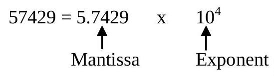
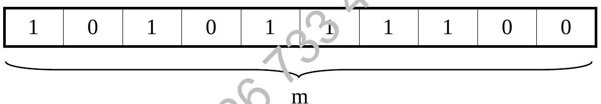
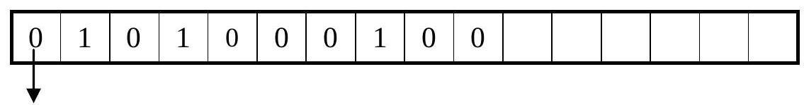
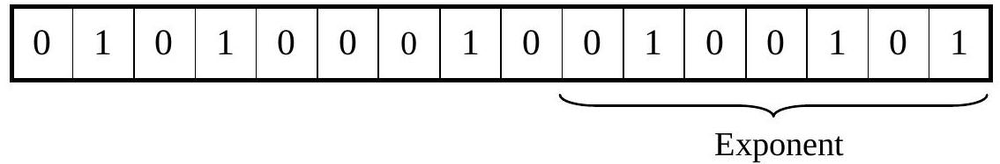
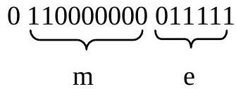

Chapter 3 : Floating Point Representation
Chapter Objectives
At the completion of this chapter, you would have learnt how to:
- perform floating point arithmetic;
- perform number storage.
3.1 Introduction
When working with a single-length 12-bit word size we can cope with integral values in the range of -2048 to +2047. Similar limitations are imposed upon mixed or fractional values. However, we do have the option of extending these ranges by the use of double-length words but this is not always convenient.
A better alternative to fixed-point representation is the floating-point representation. It is capable of holding, in a single-length word, a greater range of numbers. It also uses the same form for coping with integer mixed numbers or fractions but at a cost of reduced accuracy.
Generally, the floating-point form is suitable for handling quantities of far higher values than usual, or whose values are very small.
3.2 Fixed Point and Floating Point Binary
For fixed point binary the binary places are fixed.
0000.0000 (4 bits is reserved for integer part and the other 4 bits is reserved for fraction part)
Using such representation the numbers that can be represented are limited.
Example, if 01110.11 is to be stored using the above format only 1110.1100 could be reflected (note that most significant bit is a sign bit). To be more precise in representing number the floating-point format is used.
Using Floating Point, 01110.11 could be represented as follow:
$01110.11 = 0.1110110 \times 2^{100}$ (Using 8 bits to store number. The power is 100 or 4 in denary as four decimal places are shifted)
Floating Point numbers are made up of three parts
- Mantissa (e.g. 0.1110110)
- Base (Radix) (e.g. 2)
- Exponent (Power) (e.g. $100_{2}$)
3.3 Floating Point Storage Concepts
Mantissa can be in
- Sign modulus
- 2's complement
Exponent can be in
- 2's complements
- Excess $2^{n-1}$ where n is the no. of storage bits for exponent
3.4 Floating Point Storage Steps & Formats
Storing numbers in normalised floating point form can be defined with the following steps.
Steps:
- Convert given numbers into binary
- Check if converted is normalised, if not normalise it.
- Store mantissa based on given format. (which can be sign modulus or 2's complement.)
- Store exponent based on given format. (which can be 2's complements or excess $2^{n-1}$ method.)
3.4.1 Stored Floating Point Format Examples
Format A
Sign modulus mantissa and 2's complement exponent.
- Floating point numbers are stored using 16 bits. The first bit is the mantissa sign bit, next 9 are the normalised mantissa and the final six bits are the exponents in 2's complement.
Format B
2's complement mantissa and 2's complement exponent.
- Floating point numbers are stored using 16 bits. The first ten bits 2's complement mantissa followed by a six-bit 2's complement exponent.
Format C
Sign modulus mantissa and excess $2^{n-1}$ method.
- The first bit is the mantissa sign bit, the next 9 bits are normalised mantissa, the final six bits the exponent in excess $2^{n-1}$ form.
Format D
2's complement mantissa and excess $2^{n-1}$ method.
- Given 16 bits storage. First 10 bits 2's complement mantissa followed by 6 bits exponent in excess $2^{n-1}$ form.
Note:
- For mantissa stored using sign modulus form, 1 bit will be reserved to represent the sign, the absolute value of mantissa is stored without including the first bit before the decimal point.
- For mantissa stored using the 2's complement method, the first bit before the decimal point will be stored as it indicates the sign of the mantissa.
3.5 Floating Point Notation
Scientific notation (decimal).
Mantissa always 1 or greater, but less than 10
Exponent always integer.
Note: Mantissa can also be negative.
3.6 Normalised Floating Point Form (Decimal)
Divide mantissa by 10, increase exponent by 1.
Mantissa now always fraction, 0.1 or bigger.
Example: $0.93 \times 10^{8}, 0.9 \times 10^{-28}$
Normalisation gets rid of mixed numbers.
- Better for computers.
3.7 Normalised Exponent Form (Binary)
Same principles as decimal.
Mantissa always fraction 0.1 (binary) or bigger.
Exponent is positive or negative integer.
Note: Mantissa needs a sign bit but doesn't use two's complement (in sign-magnitude formats).
3.8 Storing Negative Mantissa
The mantissa can either be positive or negative. There are two alternative conventions used for storing the mantissa:
Sign Bit
- '0' is assigned if the mantissa is positive;
- '1' is assigned if the mantissa is negative.
Two's Complement Method.
- The two's complement of the mantissa is used if it is negative.
3.9 Storing Negative Exponent
Two alternative conventions also exist with respect to the storage of the exponent:
Two's complement form.
- The exponent is stored in its two's complement form if it is negative and so we do not need to allocate a separate space to hold the sign of the exponent. Although we must always do so for that of the mantissa (in sign-magnitude formats).
Excess $2^{n-1}$ code form.
(where n is the number of bits assigned for the exponent)
- In this method, the value of $2^{n-1}$ is added to the actual exponent whether positive or negative to give the stored exponent.
Stored Exponent = True Exponent + $2^{n-1}$
OR
True Exponent = Stored Exponent - $2^{n-1}$
3.10 Exercises
Exercise 1: Express the decimal number +20.25 in sign modulus mantissa and 2's complement exponent format (Format A).
Solution:
Steps:
- $20.25 = 20 + 0.25 = 10100 + 0.01 = 10100.01_{2}$
- Normalise: $10100.01 = 0.1010001 \times 2^{5}$
- Store Mantissa (Sign + 9 bits): Sign=0 (positive), Mantissa=101000100 (padded) -> 0 101000100
- Store Exponent (6 bits 2's comp): Exponent=5 = $000101_{2}$ -> 000101
- Combine:
Exercise 2: Express decimal number +20.25 in 2's complement mantissa and 2's complement exponent format (Format B).
Solution:
Steps:
- $20.25 = 10100.01_{2}$
- Normalise: $0.1010001 \times 2^{5}$
- Store Mantissa (10 bits 2's comp): Positive, so store directly including leading 0: 0.101000100 -> 0101000100
- Store Exponent (6 bits 2's comp): Exponent=5 = $000101_{2}$ -> 000101
- Combine: 0101000100 000101
Exercise 3: Express -20.25 in 2's complement mantissa and 2's complement exponent format (Format B).
Solution:
Steps:
- $-20.25 = -(10100.01_{2})$
- Normalise: $-(0.1010001 \times 2^{5})$
- Store Mantissa (10 bits 2's comp):
- Positive Mantissa: 0.101000100 -> 0101000100
- Invert: 1010111011
- Add 1: 1010111100 (This is the 2's complement mantissa)

- Store Exponent (6 bits 2's comp): Exponent=5 = $000101_{2}$ -> 000101
- Combine:
Exercise 4: Express -0.375 decimal in Format B.
Exercise 5: Express 20.25 in sign modulus mantissa and excess $2^{n-1}$ method format (Format C).
Solution:
Steps:
- $20.25 = 10100.01_{2}$
- Normalise: $0.1010001 \times 2^{5}$
- Store Mantissa (Sign + 9 bits): Sign=0, Mantissa=101000100 -> 0 101000100 
- Store Exponent (6 bits excess $2^{6-1}$ = excess 32):
- Excess value = $2^{6-1} = 2^5 = 32$
- Stored exponent = True exponent + Excess = 5 + 32 = 37
- 37 in binary (6 bits): $100101_{2}$ -> 100101

- Combine: 0 101000100 100101
Exercise 6: Express -0.375 in sign modulus mantissa and excess $2^{n-1}$ method format (Format C).
Exercise 7: Express the floating point register 0110000000011111 in decimal (Assume Format C).
Solution:
Steps:
- Split into parts: Sign=0, Mantissa=110000000, Exponent=011111
- Interpret Mantissa: Sign=0 (+), Value = $0.110000000_{2}$
- Interpret Exponent (Excess 32): Stored=011111 = 31. True Exp = Stored - Excess = 31 - 32 = -1
- Combine: $+0.11_{2} \times 2^{-1}$
- Convert to fixed point: $0.011_{2}$
- Convert to decimal: $0 \times 1 + 0 \times 2^{-1} + 1 \times 2^{-2} + 1 \times 2^{-3} = 0 + 0 + 1/4 + 1/8 = 0.25 + 0.125 = 0.375$
3.11 Past Years Questions
8. A floating point number is stored in normalised form using a ten-bit TWO's complement mantissa followed by a six-bit excess 32 exponent.
- Express 39.41634 in this form.
- Express 0111011100011101 as a decimal number.
An 8 bits register is used to store value in excess form.
- Show how 14 is stored in it.
- Calculate the true value from 10101011 which is in excess form. [ 2 ]
The number 25.828125 is to be stored using a 24 bit word floating point format. First bit is reserved for sign bit for mantissa, the next 8 bits for exponent in Excess form and the rest for Normalised mantissa.
- Show how the number would be stored.
- Convert 010000100101101000000000 into denary.
Five bits of computer cell are allocated to store exponent in TWO's complement form.
- Show how exponent -12 is stored in it.
- Derive the true value from the stored number, in TWO's complement form, as shown below-
1 0 1 0 1
A normalised floating point number uses a 10 bit TWO's complement mantissa followed by a 6-bit exponent in excess-32 form.
- Store the denary number -43.123 into the above word format.
- Convert the following binary word from the above format into denary. $1010010010101000$
A normalised floating point number, using a 10 bit TWO's complement mantissa followed by a 6-bit exponent in TWO's complement.
- Store the denary number 68.25 into the above word.
- Store the denary number -0.1267 into the above word.
The number -17.546875 is to be stored in floating point format is a SIXTEEN-BIT word. ONE bit is to be used for the sign of the mantissa, the next FIVE bits for the exponent in TWO's COMPLEMENT and TEN bits for the NORMALISED mantissa. Show how the number would be stored.
- What DENARY value is actually held?
In a SIXTEEN bit register, numbers are stored in NORMALISED, FLOATING-POINT form i.e. MANTISSA (first 10 bits) then EXPONENT (last 6 bits). Each part is in TWO's COMPLEMENT form, with the binary point assumed to be AFTER the LEFT HAND binary digit of the mantissa.
- What DENARY number is represented 1001011010001001? [ 3 ]
- Express the denary number, -23.875 in this format.
A floating point number is stored in normalised form using a 16 bit word, with the bit reserved as sign for the mantissa, the next 9 bits reserved for the mantissa itself, and the remaining 6 bits reserved for the exponent in excess 32 form.
- Express -36.4515 in this form.
A floating point number is stored in normalised form using a 16-bit word, with the first bit reserved as the sign for the mantissa, and the last 6 bits reserved for the exponent in TWO's complement. The remaining bits are for the mantissa itself.
- Express -16.875 in this form. [4]
- Express -0.09375 in this form.